Mighty Green is a local lawncare company in Alabama and is a part of the Turf Masters Brands Family. While working with them, I created a brand refresh that included an updated logo and some print media. Instructed to stay as true to the original branding as possible, I went in two creative directions, and created a brand guide for the chosen identity.
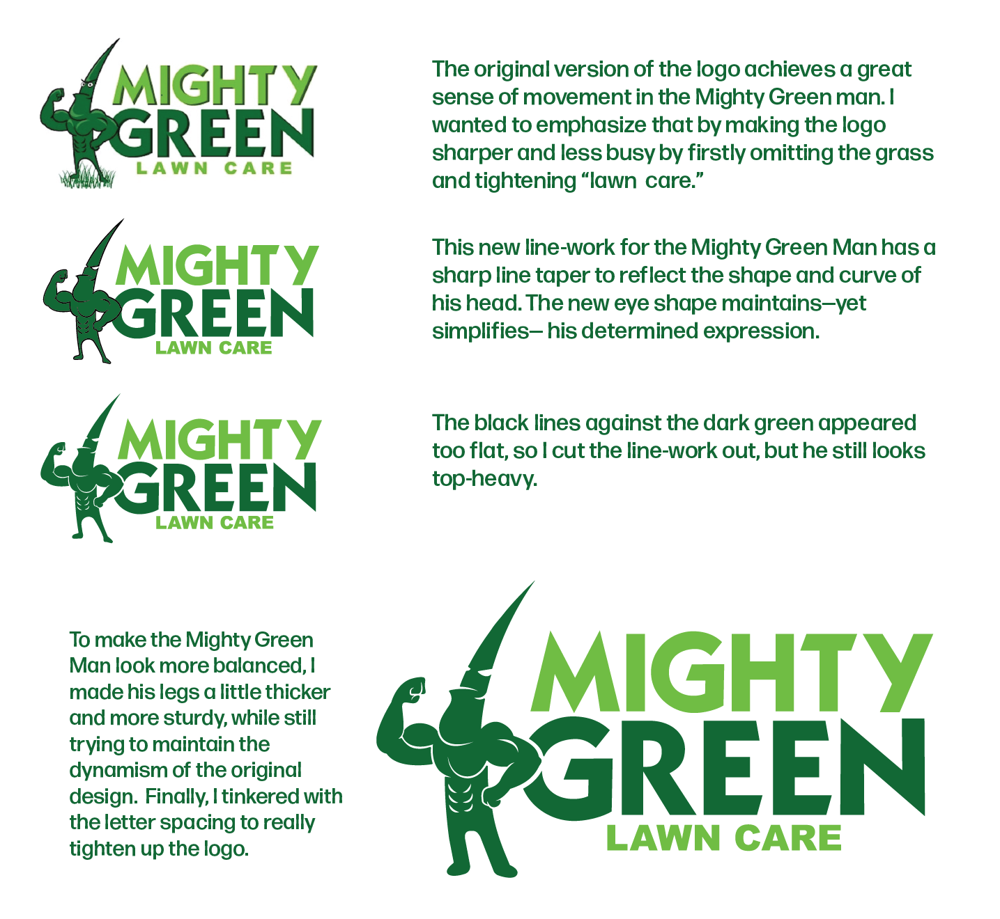
My goal for the new logo was first and foremost to simplify. The client was concerned about how the original logo wasn't condusive to one- or two-color printing, so my main concern was to create a logo that would function with many different colorways.
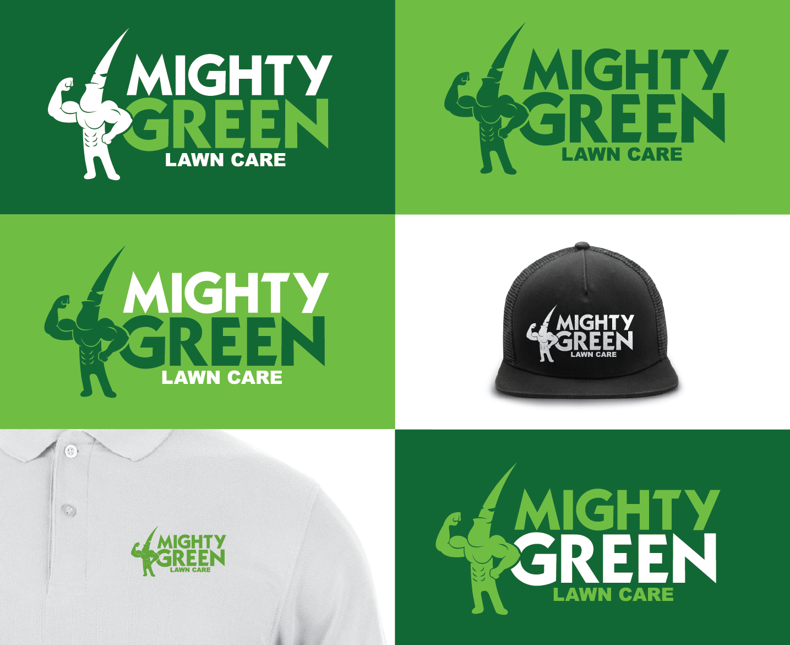
Using the agreed upon logo redesign, I moved onto developing print media for Mighty Green. They were looking for small mailers, door hangers, and yard signs. I went in two different creative directions for these products to give the client options.
After deciding to go further with the second visual direction, I created a brand guide for Mighty Green to continue using.
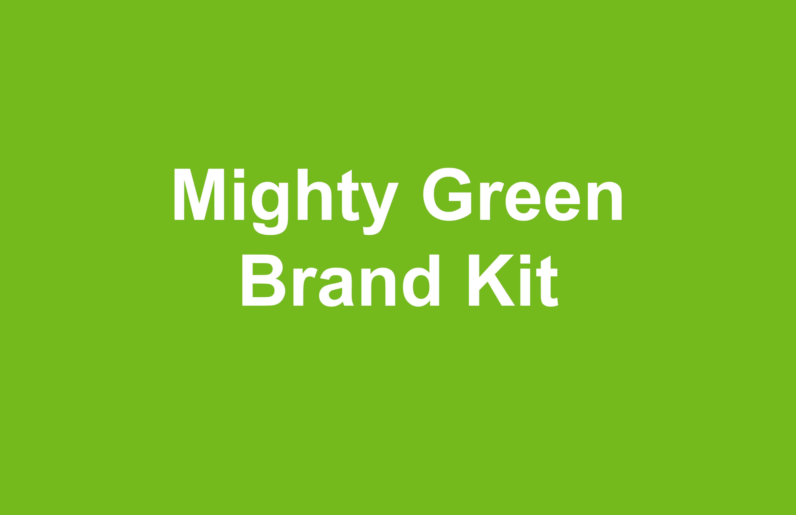
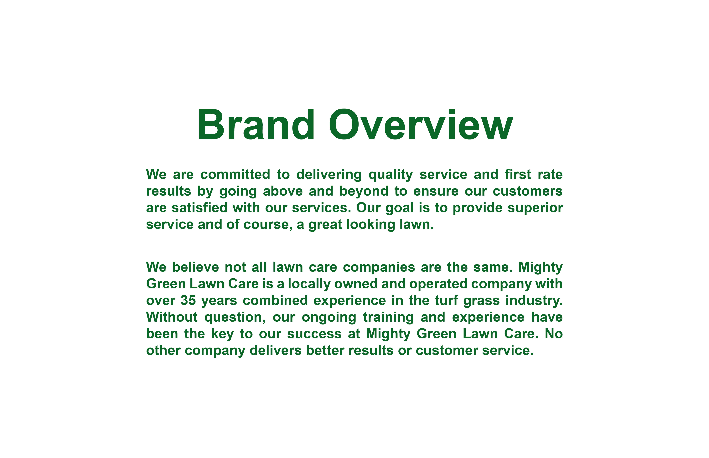
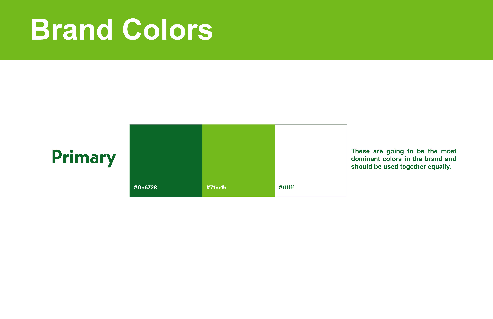
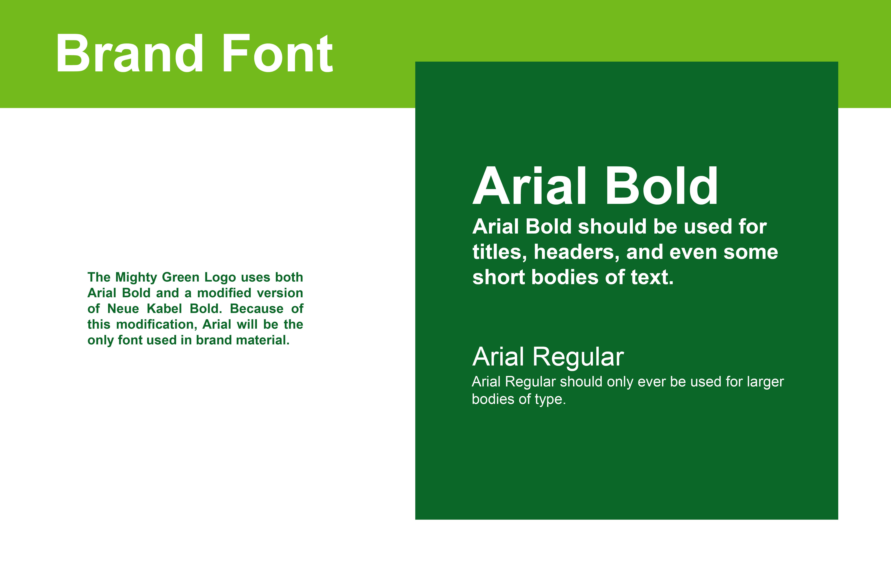
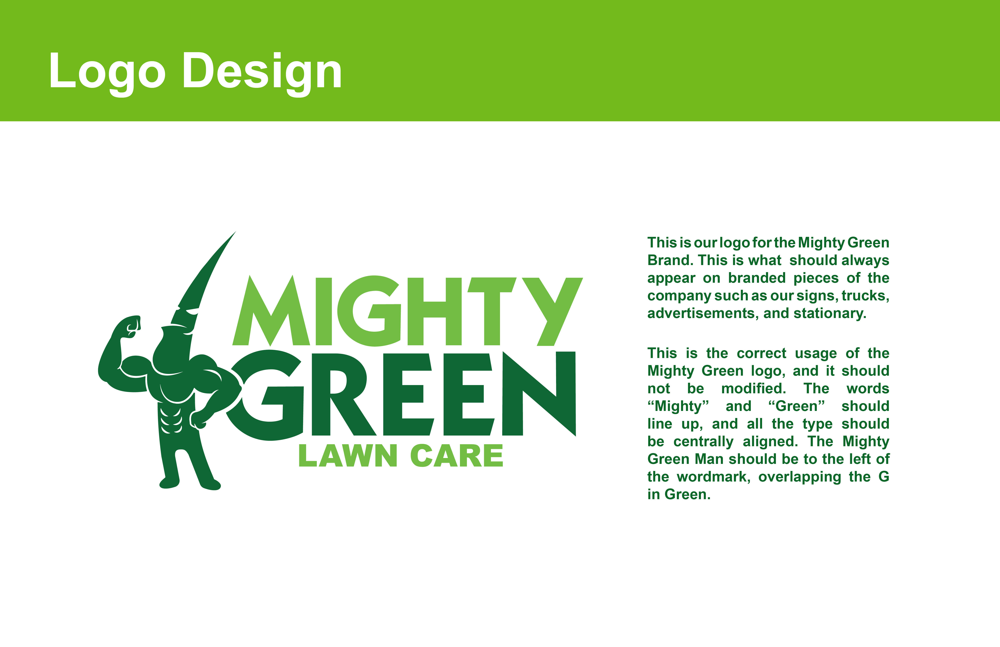
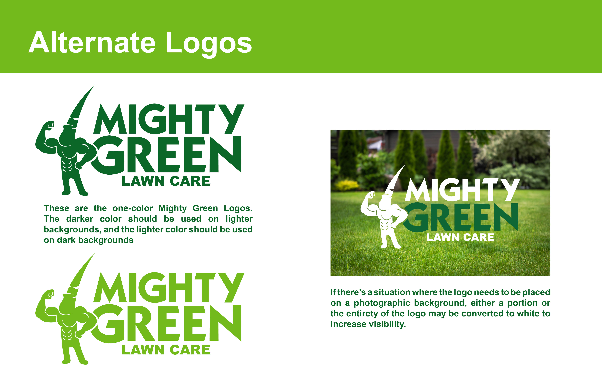
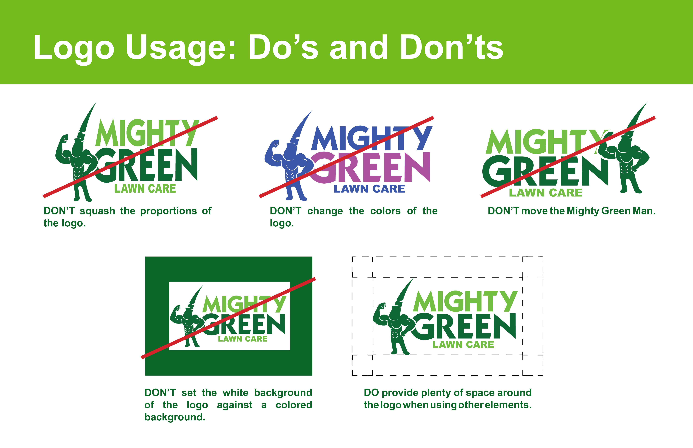
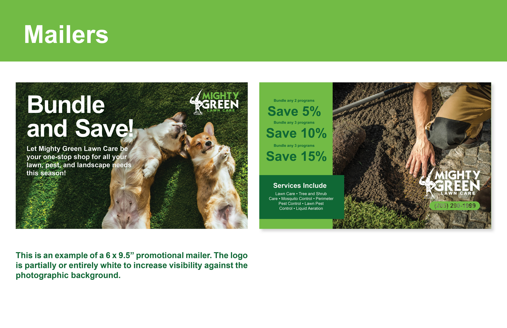
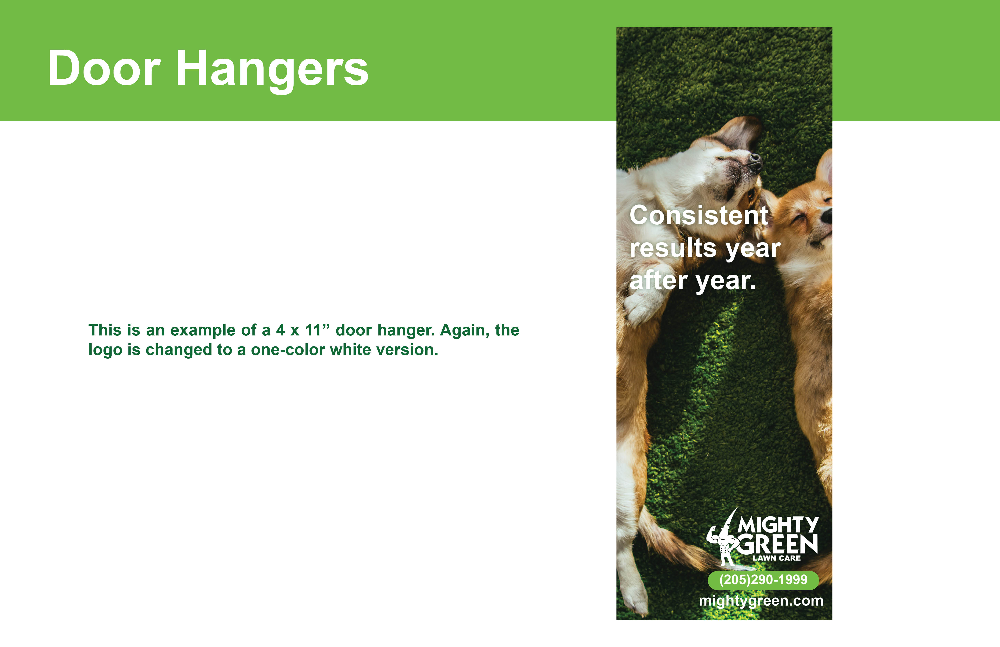
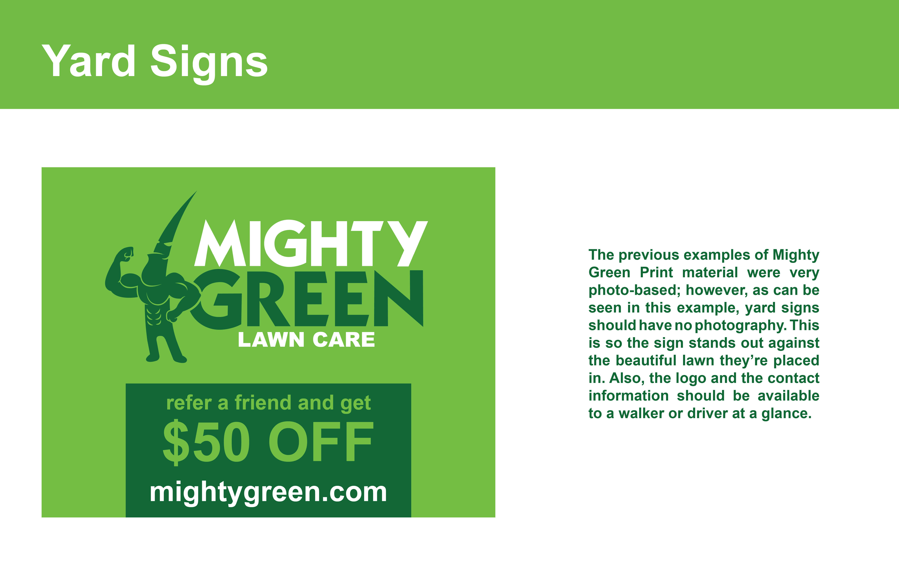

 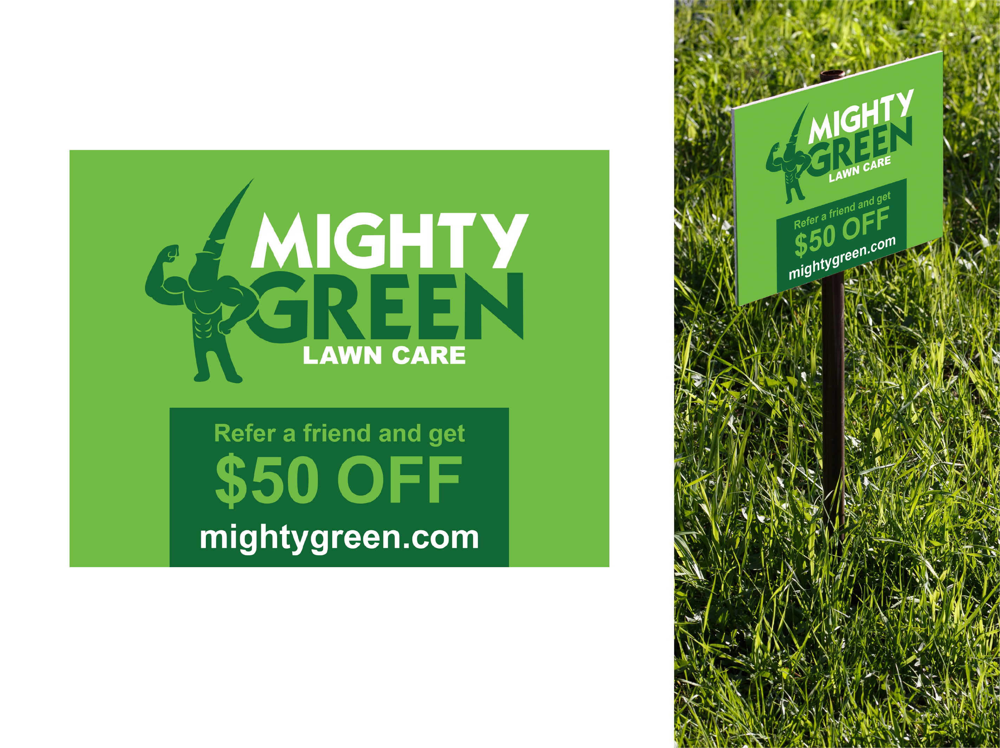
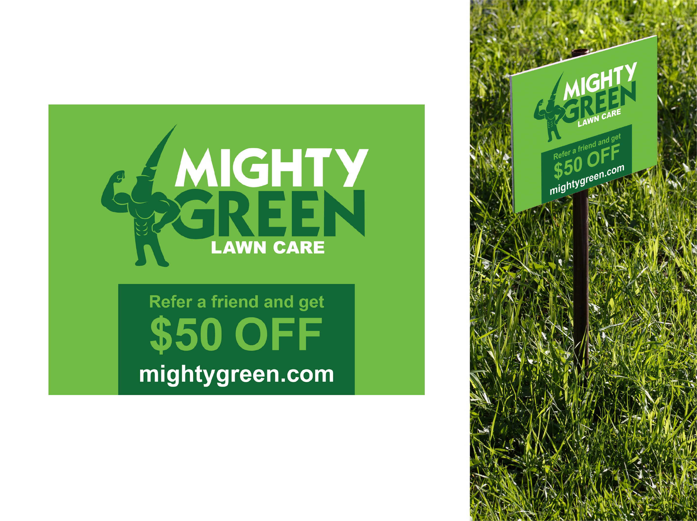